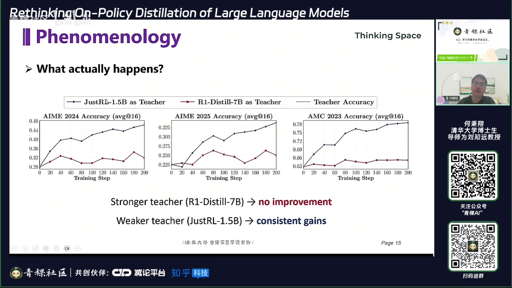
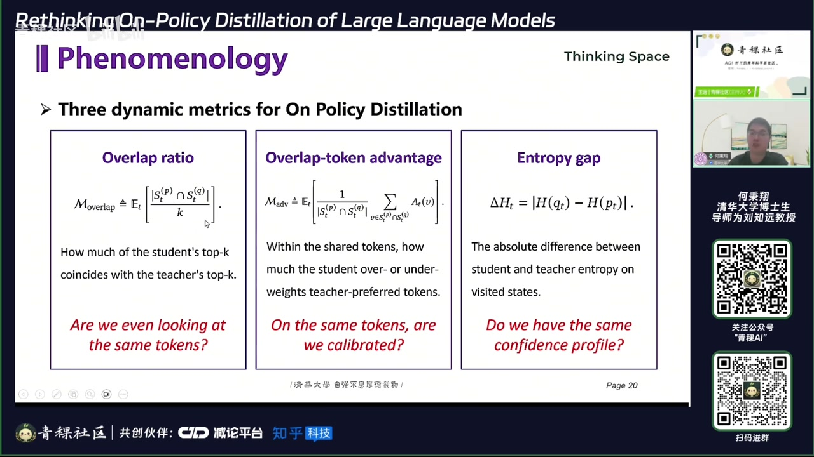
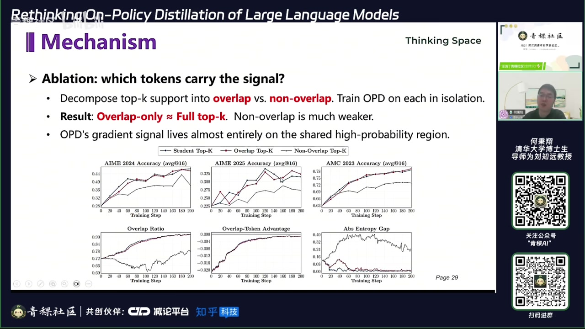
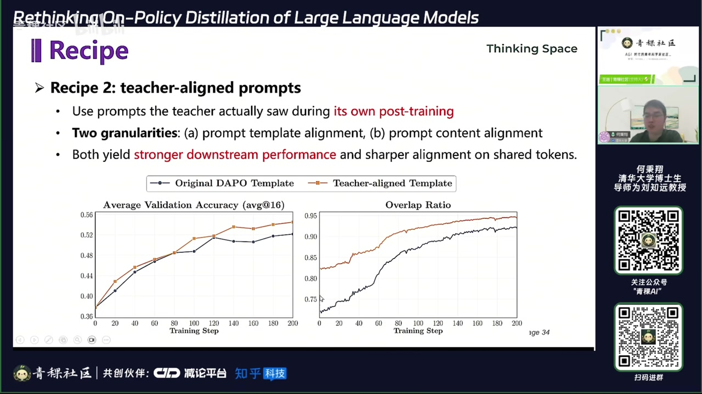
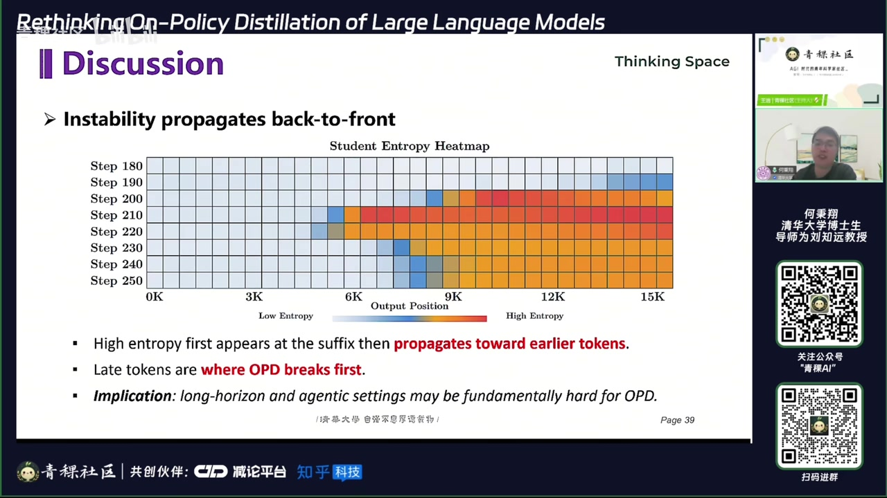
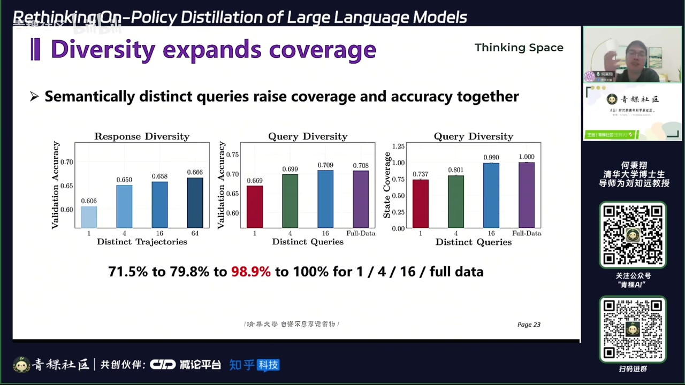
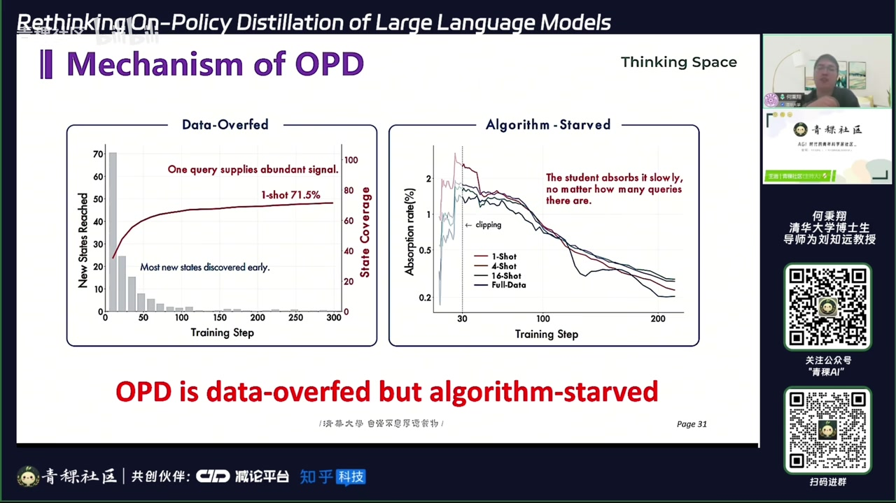
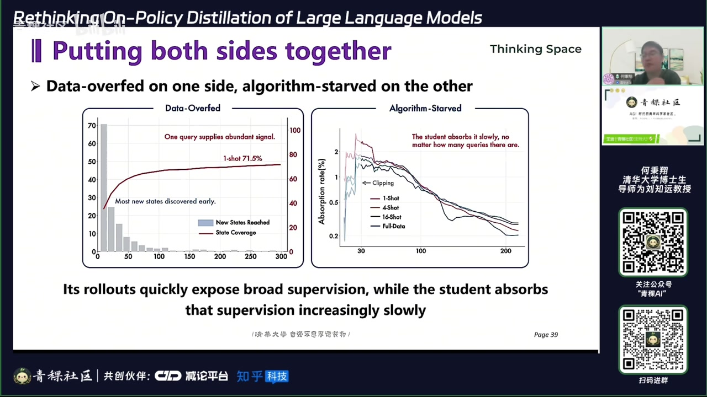

01｜反直觉现象
教师绝对能力不是 OPD 成败的充分条件；更关键的是教师与学生在学生真实 rollout 状态上的分布兼容性。
01:30–06:00 OPD 让学生按当前策略采样，再让教师对每个前缀给出下一 token 分布，相当于提供稠密 token 级监督。实验出现两类反直觉结果：更强教师可能几乎不提升学生，较弱或同源教师反而持续带来收益。

重叠率
学生与教师 top‑k token 集合有多少交集。
重叠区优势
共享候选中，教师是否给正确方向更高概率。
熵差
两者置信度与思维模式是否相容。
思维一致性
决定学生能否在自身状态分布上吸收教师信号。

02｜机制：信号集中在共享高概率区域
OPD 真正有效的梯度主要来自教师与学生都认为可能的 token；分布几乎不重叠时，教师再强也难把知识直接传过去。
12:00–14:30 消融把 token 分为 overlap 与 non‑overlap 区域。报告认为，高价值信号几乎全部落在共享高概率集合里，训练主要是在重排这些候选；教师独有而学生几乎不考虑的 token 很难被稳定吸收。

这解释了“先做少量 SFT 再 OPD”为什么常能抬高上限：SFT 先把学生推入教师熟悉的状态区域，随后 OPD 才有可利用的重叠。
03｜两条配方与稠密监督的代价
提升兼容性可以挽救 OPD，但稠密监督并非免费午餐，尤其在长时程任务中会把教师局部判断的误差反向传播到更早位置。


04｜数据视角：OPD 消费的是状态，不只是问题
一条 query 在多次 rollout 和多 token 前缀下可产生海量受监督状态，因此按“问题条数”衡量 OPD 数据量会严重低估实际监督覆盖。
31:30–38:40 报告将每个前缀视为 state，并通过表示聚类估计 coverage。在该实验中，单条 query 已覆盖约 70% 的数据集状态，16 条 query 接近 99%；增加 response 多样性比机械增加同质 query 更有效。

另一个关键观察是，训练每一步对教师—学生分布距离的吸收率大致只有 1%–2%。因此 OPD 呈现“数据过饱、算法饥饿”：可用监督很多，但优化器每步真正吸收得很慢。

05｜结论与未来工作
OPD 更像在学生可达状态上模仿教师分布，而不是无条件转移教师全部知识；数据设计应转向覆盖长尾状态，算法设计则要提高每步吸收率。

| 研究方向 | 要解决的问题 | 可能手段 |
|---|---|---|
| 状态选择 | 如何用少量 query 覆盖更多长尾状态 | coverage 估计与主动选题 |
| 优化效率 | 如何提高每步对教师分布的吸收率 | 新的目标、树级监督与更有效的更新 |
| 知识边界 | 何时只是模仿表达，何时真正迁移能力 | 跨域评测与能力分解 |
| 长时程稳定性 | 教师后段误差如何不污染前段决策 | 局部置信度、mask 与分段监督 |
证据边界：本文忠实整理视频中的讲解、论文图表与演讲者判断，并非对论文复现实验或独立同行评审。自动转录中的专名已结合幻灯片校正；仍不确定的缩写和动态数字应以原论文或项目页面为准。